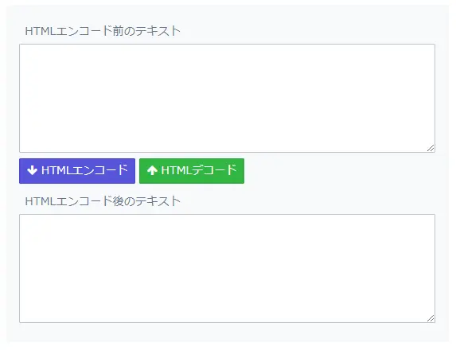

ツール準備
コミュニケーションツール
現場で必要なツールをダウンロードする
エディタ
使い慣れたエディタをダウンロードし、設定を行う
-
-
Japanese Language Pack for VS Code
VS Codeを日本語化する
-
Live Server
ローカルサーバーを立ち上げ、変更をリアルタイムでブラウザに反映する

-
Material Icon Theme
フォルダやファイルのアイコンを変更する
-
Path Autocomplete
imgなどのパス入力中にワークスペース内のディレクトリ名やファイル名を予測で出す
-
Auto Rename Tag
ペアになっている開始タグと終了タグ名を同時編集できる
-
indent-rainbow
インデントを色分けし、階層の違いが視認しやすくなる
-
Highlight Matching Tag
開始タグと終了タグにアンダーラインで目印をつける
-
zenkaku
全角スペースを可視化する

-
Code Spell Checker
英単語のミスを指摘する
-
IntelliSense for CSS class names in HTML
HTMLにクラスを記入するとき、CSSにあるクラス名を表示する
-
CSS Peek
HTML要素のクラス名やID名から、該当箇所のCSSコードを表示したり開いたりできる
-
ESLint
JavaScriptのコードが正しいかをチェックするツール

-
Adobe製品
Photoshop、Illustrator、XD、Acrobat DCなど必要なものをダウンロード
-
- ［環境設定 < 単位・定規 < 定規と文字］を「pixel」にする
- ワークスペースのカスタマイズ（文字・プロパティ・ヒストリー・レイヤーなど）
ツール
使用頻度の高いツールをダウンロードする
ブラウザ
デフォルトでマシンに入っていないものはダウンロードし、必要なブラウザの設定を行う
作業フォルダの作成
作業専用のフォルダをどこに作成するか確認する。
会社によってはPCのデスクトップへの保存を禁止していたり、OneDriveなどへファイルを保存する決まり等があるのでルールに則り作業フォルダを作成する。
Node.js
インストールが完了したらバージョンチェック（node -v）
Git
- 1.インストーラのダウンロード&実行
-
環境に合ったインストーラを選択し、ダウンロードする。ダウンロードが完了したら、インストーラを実行しセットアップを行う。
-
- Additional Icons- On the Desktop
- Git Bashのショートカットをデスクトップに置く
- Windows Explorer Integration
- 右クリックした時に出てくるメニューについての設定。チェックを入れるとメニューに「Git Bush」や「Git GUI」が追加される
- Associate .git* configration files with the default text editor
- 「.git」でファイルをデフォルトのテキストエディターと関連付ける
- Associate .sh files to be run with Bash
- 「.sh」ファイルをGit Bashで実行するように設定する
- Use a TrueType font in all console windows
- コンソールで「TrueType フォント」を使うかどうか設定する。これをチェックすると日本語が文字化けするので、できればチェックしない方が良い
-
- Use Git Bash only
- Git Bashのみでgitコマンドを使う場合にこちらを選択。Windowsの環境変数「PATH」は変更されない
- Use Git from the Windows Command Prompt
- WindowsのコマンドプロンプトからGitコマンドを実行する場合はこちらを選択。Windowsの環境変数「PATH」が更新される
- Use Git and optional Unix tools from the Windows Command Prompt
- Windowsのコマンドプロンプト + Unix系コマンドを使用する場合にこちらを選択。Windowsの環境変数「PATH」が更新される
- 2.インストールの確認
-
git --version - 3.初期設定
-
Git Bashを起動してユーザ名とメールアドレスを設定する。
git config --global user.name "ユーザ名"git config --global user.email "メールアドレス" - 4.設定内容の確認
-
git config user.namegit config user.email
ブックマーク
-
difff《ﾃﾞｭﾌﾌ》
テキスト比較ツール
WinMergeだと差分とされる余白が無視されるのでWinMergeで差分が見にくい時に便利 -
PageSpeed Insights
モバイル、PCそれぞれのページ表示速度やパフォーマンス検証
-
Html Checker
W3Cのマークアップ検証
-
CSS W3C validators
W3CのCSS検証
-
Can I use
HTMLやCSSのプロパティごとのブラウザ対応状況を確認
-
placehold.jp
ダミー画像を生成
-
Squoosh
Googleが提供するブラウザ上で画像の圧縮ができるサービス
※情報公開前の内容が含まれる画像等使用に適さない画像はオンラインでの圧縮を避けてください -
PEKO STEP
画像をdata URIに変換するツール
-
Unicode文字ツール
JSで日本語の文字化けを回避するエンコードツール
-
CSS Unicode変換
contentプロパティで日本語の文字化けを回避するUnicode変換ツール
-
テキストのHTMLエンコード／デコード
code要素でHTMLエンコードが必要な場合に使える
 -
SVG書き出し方法
書き出したSVGがただの画像になっている時に書きだし方を見直す用
Chrome拡張機能
-
HTMLエラーチェッカー
HTMLの開始・終了タグの過不足などを検出する
-
Check My Links
リンク切れを探す

-
Alt & Meta viewer
AltまたはTitle属性をツールチップで表示する。また、ヘッダのTitle、Meta情報を一覧表示させる
-
HTML5 Outliner
見出しとセクショニング要素でナビゲート可能なページアウトラインを生成する
-
Wappalyzer
表示中のWebページで利用されているソフトウェアやサービス、フレームワークなどを一覧表示する
-
Fonts Ninja
Webサイトで使われているフォントを確認する
-
16進カラーピッカー
スポイトでブラウザ上の色を読み取り、カラーコードを表示する
-
The QR Code Extension
ページのQRコードを生成する

-
Pasty
複数リンクを一気に開く
-
PerfectPixel
ブラウザ上に透過したデザインカンプを重ねて表示する
-
DeepL翻訳
Google翻訳よりも精度の高い翻訳ツール
-
CrxMouse
マウスジェスチャーツール
-
OneTab
開いているタブを1つのタブにまとめる
-
CSS Peeper
フォント名、Webサイト内の配色、要素サイズなどが確認できる
Tips
Gulp
- 1.package.json作成
-
コマンドラインを起動して案件フォルダにcdコマンドで移動します。次に以下を実行したらpackage.jsonファイルが生成されます。
npm init -y - 2.Gulpインストール
-
Gulp本体をローカル環境に（プロジェクトフォルダー内で使えるように）インストールします。
※Gulpはグローバルではなく、ローカルだけにインストールする。環境差異で動作しないなどトラブルのもとになるので、グローバルにインストールしないほうが望ましい。npm install -D gulp - 3-a.必要なモジュールをインストール
-
以下コマンドは一例です。必要に応じてモジュールを追加します。
npm install -D gulp sass gulp-sass - 3-b.必要なパッケージをインストール
-
現場でpackage.json等共有された場合は、package.jsonを案件フォルダ内に保持している状態でコマンドを実行すると、package.json内に記載されているものが「node_modules」配下にインストールされます。
npm install -D - 4.タスクの作成
- gulpfile.jsを作成し、Sassのコンパイル処理や画像圧縮/Webp変換など必要なコードを記述する。
コマンド一覧
| コマンド | 説明 |
|---|---|
| git version | Gitのバージョンを出力する |
| git clone |
|
| git remote |
|
| git branch |
|
| git switch |
|
| git restore |
|
| git diff |
|
| git status |
|
| git add |
|
| git reset HEAD |
|
| git commit |
|
| git push |
|
| git fetch |
|
| git merge |
|
| git log | ログを出力する |
| git blame {ファイルパス} | 対象ファイル全体の各行ごとに、最後に編集したリビジョンと作者を表示する |
| git show {コミットID} | 対象コミットのメッセージとテキストの差分を表示する |
| git rm |
|
| git init | 空のGitリポジトリを作成する |
| git mv |
|
| git pull {リモート名} {ブランチ名} |
リモートリポジトリのデータを取得する リモート名：origin ブランチ名：masterの場合、git pull origin master |
| コマンド | 説明 |
|---|---|
| cd + ディレクトリ | ディレクトリ移動 |
| tree | ディレクトリツリー構造 |
| tree /f | ファイルツリー構造 |
| dir | ディレクトリ一覧 |
| cls | 画面クリア |
| rmdir + ディレクトリ名 | ディレクトリ削除 |
| mkdir + ディレクトリ名 | ディレクトリ作成 |
| del + ファイル名 | ファイル削除 |
| ren + 名前 | ファイル・ディレクトリ名変更 |
| コマンド | 説明 |
|---|---|
| pwd | 現在のディレクトリのパスを表示 |
| ls | カレントディレクトリ内のファイルを一覧表示 |
| mkdir {ディレクトリ名} | 指定した名前のディレクトリを作成 |
| cd {ディレクトリ名} | カレントディレクトリを指定したディレクトリに変更 |
| コマンド、キー | 説明 |
|---|---|
| history | コマンドの履歴を表示 |
| 上下の矢印キー（↑／↓） | ひとつ前のコマンド、ひとつ後のコマンドの呼び出し |
| Ctrl + A | カーソルを行の先頭に移動 |
| Ctrl + E | カーソルを行の末尾に移動 |
| Ctrl + U | カーソルの左側をすべて削除 |
| Ctrl + K | カーソルの右側をすべて削除 |
| Tabキー | ディレクトリ名やファイル名を途中まで入力したときに「Tab」キーを押すとそのディレクトリ名やファイル名を補完する |